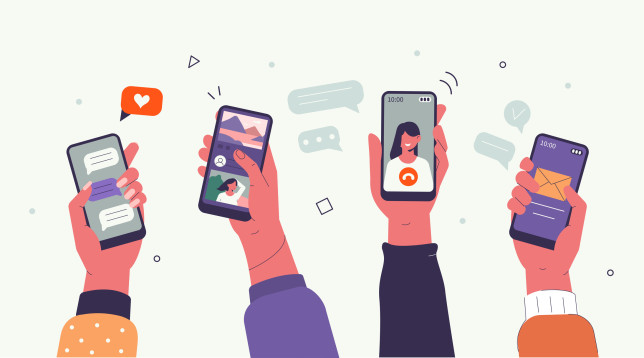

Statistics and Further Tips
Stats
- Meditation
- Spend time with loved ones
- Watch your favorite TV show/movie
- Sleep
20%

of people who participate in at least one social media platform have reported feeling anxious if they do not check on any updates within three hours.
13%
of individuals 12-17 years old have been reported as having depression.
32%
of individuals 12-17 years old have been reported as having anxiety.
72%
of teenagers have been cyberbullied.
60%
of adolescents use their phones within an hour of going to sleep, which can cause sleep deprivation.

Tips on How to Help Your Mental Health While Using Social Media
Set your phone to Do Not Disturb for social media notifications at certain times of the day.
Set time limits for yourself for certain apps that you notice are making you feel down or upset.
Remember that not all the content you see online is true or real, and that you should not compare yourself to others.
Try to use social media apps less before going to sleep.
Take time away from any social media to focus on taking care of yourself and you physical and mental needs.